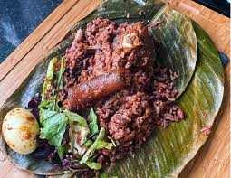

Home
WAAKYE | RICE & BEANS MONSTER

HOW WAAKYE IS PREPARED
Ingredients
- Rice
- Beans
- Onions
- Tomatoes
- Pepper
- Salt
- Meat
- Dried Fish
Preparation Process
- Rinse the rice and beans thoroughly.
- Cook the rice and beans together in a pot with water until tender.
- In a separate pot, heat oil and sauté onions, tomatoes, lots of pepper and salt [per your taste] for the tomato Stew.
- Add a piece of meat and desired quantity of fish, wele to the stew and cook until tender.
- Serve the waakye with the tomato stew spread all over in the bowl served.